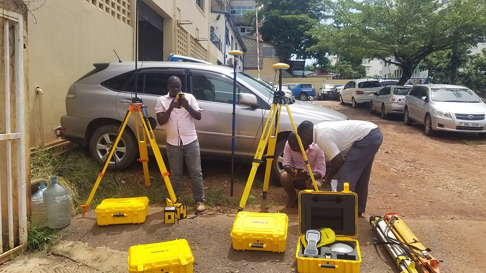
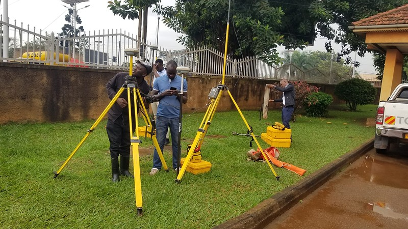
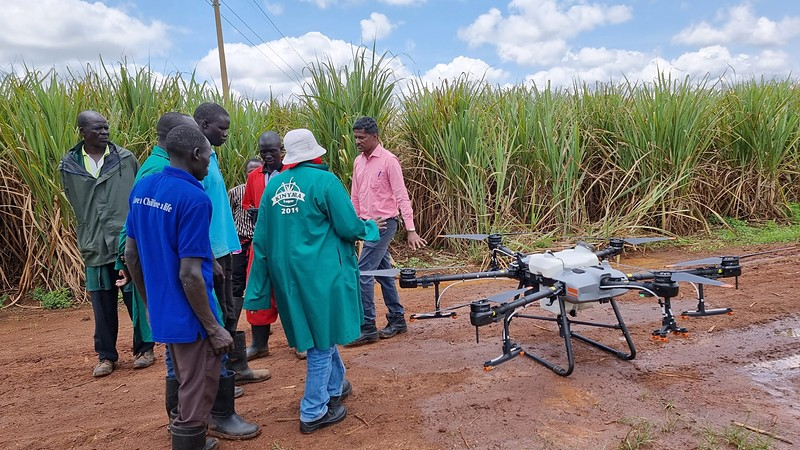

Precision Geospatial & Advanced IT Solutions For Africa's Built Environment
Phirez International Limited empowers surveying, mining, construction, utilities, and government organizations with industry-standard Trimble GNSS positioning, DJI Enterprise drone LiDAR, Esri spatial infrastructure, and certified calibration support across Uganda and East Africa.

Essential Capabilities For Precision Field Operations
Integrated hardware, aerial mapping, and spatial software engineered to work as one connected workflow — from the field to the office.
Precision Survey Hardware
Trimble, Spectra & Nikon GNSS receivers, robotic total stations, and 3D laser scanners calibrated to millimeter accuracy.
Aerial Mapping & LiDAR
DJI Enterprise drone fleets capturing photogrammetry, thermal imagery, and high-density LiDAR across vast project sites.
Enterprise GIS & SDI
Esri ArcGIS deployment and spatial data infrastructure that turns raw field capture into decision-ready intelligence.
Trusted By Industry Leaders, Government Ministries & International Agencies
Fifteen Years Of Spatial Excellence & Lifecycle Support
Phirez International Limited is Uganda's premier multidisciplinary technology company, combining world-class surveying hardware, cutting-edge drone photogrammetry & LiDAR, enterprise GIS integration, and a certified equipment calibration facility. We don't just supply equipment — we engineer the complete spatial workflow so your projects run accurately, on time, and on budget.

World-Class Hardware & Software Portfolio
We partner with global technology pioneers to supply, deploy, calibrate, and support industry-standard geospatial instruments, drone fleets, and spatial analysis platforms.
Trimble Geospatial
Industry-standard GNSS receivers, robotic total stations, 3D laser scanners, and Trimble Business Center (TBC) for surveyors and civil engineers.
- Trimble R12i GNSS with ProPoint & TIP Tilt
- S-Series Robotic Total Stations & Trimble Access
DJI Enterprise Drones & LiDAR
Commercial drone platforms equipped with RTK centimeter positioning, thermal imaging, and high-density aerial LiDAR sensors for large-area surveys.
- Matrice 350 RTK Industrial Survey Drone
- Mavic 3 Enterprise & Thermal Multispectral
Esri GIS & Spatial Infrastructure
Enterprise GIS licensing, deployment, spatial data architecture, and custom mapping applications for national planning and corporate operations.
- ArcGIS Pro Advanced Desktop Analytics
- ArcGIS Enterprise & Spatial Data Infrastructure
Spectra Geospatial
High-durability optical total stations, rugged GNSS receivers, and productive field software designed for demanding construction environments.
- FOCUS 35 & FOCUS 50 Robotic Stations
- SP85 & SP60 GNSS RTK Receivers
Nikon Precision Survey
World-renowned optical total stations featuring Nikon clear optics, superior EDM range, and dependable dual-axis compensation for land surveyors.
- Nikon XS & XF Series Mechanical Stations
- High-Accuracy Optical Auto-Levels
XGRIDS Handheld LiDAR
Rapid handheld and mobile 3D SLAM scanning for underground mines, dense forest canopies, historical preservation, and complex indoor BIM layouts.
- Lixel L2 Handheld Mobile SLAM Scanner
- Real-Time Colored 3D Point Clouds
US Radar Ground Penetrating Radar
Ground penetrating radar (GPR) systems for underground utility detection, void detection, concrete rebar inspection, and non-destructive geophysical mapping.
- Quantum Imager Triple-Frequency GPR
- Underground Pipe & Cable Line Tracing
Seafloor Systems Bathymetry
Unmanned survey vessels (USVs) and hydrographic acoustic echosounders for bathymetric mapping of dams, reservoirs, rivers, and coastal waterways.
- EchoBoat Autonomous Survey USV
- Singlebeam & Multibeam Sonar Systems
Carlson Software & Autodesk
Field data collection, civil engineering, mine planning, and CAD/BIM software suites connecting field measurements directly to engineering models.
- Carlson SurvCE & SurvPC Field Software
- Carlson Mining, Geology & Civil Modules
Solutions Aligned To How You Work
From large-scale national infrastructure and mining pits to municipal cadastre and disaster response, we configure specialized hardware, analytics, and service packages built for Africa's operating realities.
Mining, Quarrying & Earthworks
Stockpile volumetric audits with drone LiDAR, pit slope stability monitoring with robotic total stations, blast hole pattern navigation, and Carlson mine design workflows.
Civil Engineering & Road Construction
Centimeter-accurate road corridor surveys, machine control positioning, bridge deflection monitoring, and direct BIM-to-field stakeout with Trimble Access.
Land Cadastre & Municipal Administration
Establishing national geodetic CORS networks, legal boundary cadastre, digital land registries, and enterprise spatial data infrastructure (SDI) with Esri ArcGIS.
Utilities, Energy & Telecom Corridors
Power transmission line clearance modeling with drone LiDAR, pipeline routing, and non-destructive subsurface pipe/fiber tracing with US Radar GPR.
Agriculture, Forestry & Environment
Multispectral NDVI drone surveys for variable-rate fertilization, forest canopy biomass estimation, water basin catchment modeling, and environmental impact assessments.
Public Safety, UN & Humanitarian Response
Rapid drone situational awareness, refugee settlement micro-planning, flood inundation modeling, and mobile spatial data collection for NGOs and UN agencies.
Comprehensive Services & Lifecycle Support
We ensure your investment delivers maximum productivity and zero unexpected downtime. Our certified service center, HelpDesk engineers, and training academy protect your field crews every step of the way.
Certified Service & Calibration
Our Kampala service center is equipped with optical collimator test benches and EDM baseline calibration to restore instruments to strict factory tolerances.
- Multi-collimator optical baseline calibration
- EDM laser distance calibration & certification
Technical Support HelpDesk
When you are on site and need immediate assistance, our dedicated HelpDesk engineers provide direct phone, WhatsApp, and remote-desktop field support.
- Immediate telephone & field troubleshooting
- Trimble Access & controller firmware updates
Phirez Training Academy
Blended practical learning combining classroom theory with hands-on field practice to equip your team with accredited operational mastery.
- RTK GNSS & Robotic Total Station practicals
- Commercial Drone Pilot & LiDAR processing
Contract Survey & Engineering
For high-consequence projects, our registered surveyors and engineers execute turn-key geodetic, bathymetric, and drone LiDAR field campaigns.
- Primary geodetic control networks & CORS setup
- Aerial photogrammetry & corridor LiDAR mapping
Spatial Data Infrastructure & IT
Deploying centralized enterprise GIS repositories, secure cloud geodatabases, and real-time telemetry pipelines that bridge field data to executive dashboards.
- Enterprise GIS server architecture & deployment
- Cadastral and asset database harmonization
Phirez Technology Assurance Plan
Premium service level agreements designed to guarantee uninterrupted operational continuity, priority repair queuing, and scheduled preventative care.
- Complimentary loaner equipment during major servicing
- Annual multi-point preventive maintenance & calibration
Capability Spotlights & Field Photography
Illustrative examples of the type of work we deliver, not named case studies with client-attributed results.
National Geodetic Control & Infrastructure Cadastral Survey
High-accuracy Trimble multi-frequency GNSS receivers establish reliable geodetic baselines and legal parcel boundaries for national infrastructure corridors, even across complex terrain.
Read MoreAerial Drone Photogrammetry & Pit Volumetric Auditing
DJI Enterprise RTK drones and Trimble Business Center photogrammetry replace manual stockpile surveys with autonomous 3D surface modeling and cut/fill volume calculation — faster, and with nobody climbing hazardous stockpiles.
Read More
Multispectral Drone Imagery for Precision Crop Health Optimization
Multispectral drone sensing over commercial sugarcane estates generates NDVI vegetation indices that pinpoint nutrient deficiencies, guiding targeted rather than blanket fertilizer application.
Read MoreSee Our Precision Systems In The Field
Ready To Equip Your Team With Industry-Leading Precision?
Whether you are sourcing Trimble GNSS rovers, upgrading your aerial drone mapping capabilities, designing a national spatial data infrastructure, or scheduling annual equipment calibration — our certified specialists are ready to help.